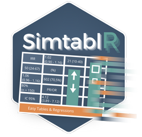

Overview
SimtablR provides a streamlined toolkit for tabulating data and calculating multi-outcome regression or diagnostic accuracy metrics. The aim of this package is to provide a simple, easy-to-use core set of functions that can quickly generate pre-formatted tables ready for export to Excel, PowerPoint/Word (via flextable), or simply as formatted dataframes.
The tb() function is built to replace and enhance the base R table() function. With just a single word-argument, you can add percentages, Prevalence Ratios (with CIs!), and Odds Ratios. What used to be a time-consuming process of iterating through variables is now done by a single, fast function.
regtab() streamlines the process of multi-outcome regressions, frequent in epidemiological studies. Simply set the predictors, the regression method, and define a series of outcomes (e.g., a list of symptoms). The function will run the regression on each outcome, handle potential errors, calculate IRRs/ORs with confidence intervals, and format everything into a single table ready for export.
The 3 Core Functions
-
Descriptive Tables (
tb): Create comprehensive frequency and summary tables with:- Automatic percentages (row, column, or total)
- Statistical tests (Chi-squared, Fisher’s exact, McNemar’s)
- Effect measures (Prevalence Ratios, Odds Ratios with confidence intervals)
- Column stratification for complex cross-tabulations
- Flexible output formats (console, data.frame, flextable)
-
Diagnostic Accuracy Testing (
diag_test): Evaluate binary diagnostic tests with:- Complete confusion matrix
- Sensitivity, specificity, PPV, NPV
- Likelihood ratios, accuracy, prevalence
- Youden index and F1 score
- Exact binomial confidence intervals
-
Multi-Outcome Regression (
regtab): Generate publication-ready regression tables with:- Simultaneous fitting of multiple outcomes
- Robust (sandwich) standard errors
- Automatic exponentiation (IRR for Poisson, OR for logistic)
- Wide-format tables pre-formatted
Installation
You can install the development version directly from GitHub:
# install.packages("devtools")
devtools::install_github("MatheusTG-14/tableR")Usage & Examples
Let’s look at the basics of SimtablR. First, load the package and the included synthetic dataset:
epitabl is a generic dataset containing demographic and clinical variables common in epidemiological studies.
Descriptive Tables (tb)
The tb( ) function generates one-way or two-way tables. You simply reference the dataset, then the row variable, and optionally a column variable.
# Simple cross-tabulation of Disease by Sex
tb(epitabl, disease, sex)Percentages & Styles You can add percentages using flags: p (total %), row (row %), or col (column %). You can also customize the display format using the style argument (e.g., “pct_n” for % (n)):
# Column percentages formatted as "25.5% (100)"
tb(epitabl, disease, sex, col, style = "pct_n")Statistical Tests & Effect Measures Add p-values automatically with test = TRUE. You can also calculate Prevalence Ratios (PR) or Odds Ratios (OR) directly in the table:
# Add Chi-squared test and Prevalence Ratios
tb(epitabl, disease, sex, col,
test = TRUE,
rp = TRUE, # Calculates Prevalence Ratio
ref = "Yes") # Sets reference levelStratification Need to stratify by a third variable? Use the strat argument:
# Add Chi-squared test and Prevalence Ratios
# Disease vs Sex, stratified by Region
tb(epitabl, disease, sex, strat = region, col)Diagnostic Accuracy (diag_test)
Evaluate binary tests against a gold standard. The function auto-detects positive levels or allows manual specification.
# Compare a 'Rapid Test' vs 'Lab Confirmation'
results <- diag_test(epitabl,
test = rapid_test,
ref = lab_confirmed,
positive = "Yes", # Reference positive level
test_positive = "Positive") # Test positive level
resultsYou can also visualize the confusion matrix (in early testing):
plot(results, main = "Rapid Test Accuracy")Regression Analysis (regtab)
Fit models for multiple outcomes at once. regtab handles the iteration, robust error calculation, and formatting. Poisson Regression (IRR)
# Assess the effect of Age and Sex on multiple outcomes (counts)
regtab(epitabl,
outcomes = c("outcome1", "outcome2", "outcome3"),
predictors = "~ age + sex + smoking",
family = poisson(link = "log"),
robust = TRUE) # Uses robust standard errorsYou can use the same formatting available in tb in regtab. Here, we add labels to the outcomes, specify 3 decimal places using d and define the CI as 99%
poisson_table <- regtab(
data = epitabl,
outcomes = c("outcome1", "outcome2", "outcome3"),
predictors = ~ age + sex + smoking + bmi,
family = poisson(link = "log"),
robust = TRUE,
exponentiate = TRUE, # Returns Incidence Rate Ratios
labels = c(
outcome1 = "Hospital Visits",
outcome2 = "ER Visits",
outcome3 = "Admissions"
),
d = 2,
conf.level = 0.99
)
print(poisson_table)Logistic Regression (OR)
# Assess risk factors for Hospitalization
regtab(epitabl,
outcomes = "hospitalized",
predictors = "~ age + bmi + comorbidity_score",
family = binomial(link = "logit"))Exporting to Word/PowerPoint
tabela <- tb(epitabl, disease, sex, col, test = TRUE)
# Convert to flextable
library(flextable)
ft <- as_flextable(tabela)
ft
# You can now use save_as_docx(ft, path = "table1.docx")Dependencies
Core dependencies are automatically installed. For enhanced functionality:
# For flextable output (tb function)
install.packages("flextable")
# For robust standard errors (regtab function)
install.packages(c("sandwich", "lmtest"))
# For Excel export (regtab function)
install.packages("openxlsx")Documentation
For detailed usage instructions and advanced features, see the package vignette:
vignette("SimtablR-manual", package = "SimtablR")Or view documentation for individual functions:
?tb
?diag_test
?regtabGetting Help
- Bug Reports: GitHub Issues
-
Documentation:
help(package = "SimtablR")